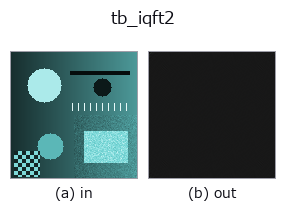

typed op• データ種: qimage → qimage
• 呼び出し: fullseye.apply(img, "tb_iqft2", a=0.5, b=0.5) (2-D は 1 画像 + 2 スカラつまみ a,b∈[0,1] のモデル)

*図は合成の入力 128×128 で実際に走らせた出力。左が入力、右が出力。点群は上から見た散布(明るさ = z)、1-D 列は折れ線、体積は z 方向の最大値投影、動画は中央フレーム、複素画像は振幅、絵にならない返り値は値そのもの。*
*つまみ a は出力を変えない(実測: 0.1 / 0.5 / 0.9 で同一)。*
*つまみ b は出力を変えない(実測: 0.1 / 0.5 / 0.9 で同一)。*
段階(前置きの op → この op。左から順):
▸ tb_iqft2: stages (docs site)
別の画像でも(合成シーン / 写真 / 硬貨。上段が入力、下段がその出力。つまみは既定):
▸ tb_iqft2: other inputs (docs site)
Inverse quaternion Fourier transform of a centred spectrum. → (H, W, 4).
The exact inverse of :func:qft2 for the same side and the same mu:
measured round-trip error `2.22e-15` for both sides on a standard-normal
`(32, 32, 4) field. The kernel is exp(+mu * 2*pi*(...))` applied on the
side named, and the `1/(H*W)` normalisation is carried here, as in
`numpy.fft.ifft2`.
Using the wrong side does not raise. `iqft2(qft2(q, "left"), "right")`
returns a finite, plausible quaternion image that is simply not `q`:
measured `max|err| = 1.113` on a random colour image whose own range is
`0.9994 (another seed: 1.063 against 1.0), and — the dangerous case — only 0.054` against a range of
`1.076` on a grey-axis-dominated one, which is small enough to survive a
look at the picture. The `side` argument is required at both ends for
exactly this reason, and the two calls must agree: nothing in the data
records which transform produced it, so nothing downstream can catch the
mismatch for you.
Raises `ValueError: *spectrum* is not a valid (H, W, 4)` field;
*side* is not `'left' / 'right'`; *mu* is not a finite non-zero
3-vector.
Typed bridge of the quat op `iqft2 into the 2-D evolution registry: the same implementation, called under the op(v, a, b) convention. This op has no tunable parameter; a and b` are unused.
• サンプルデータ カタログ(DL URL / ライセンス) — 2-D は skimage.data(BSD/public)+ 合成、3-D は実データ源(Stanford/PDS 等)の DL URL。
• 演算子の来歴・参考文献 — この op 族の元になった研究/手法の出典。
下のプログラムは実際に走ることを確かめてある(図と同じ入力)。Studio のヘルプではこのブロックがボタンになり、その場で読み込んで実行できる。
img_to_rgb 0.50 0.50 tb_rgb_to_quaternion 0.50 0.50 tb_iqft2 0.50 0.50
▸ Load this pipeline · Load & run
次の例は元の台帳 op iqft2 を呼ぶもの。この橋渡し op は同じ実装を fn(v, a, b) 規約に合わせただけなので、挙動はそのまま当てはまる(呼び出し形だけ違う)。
• quaternion_monogenic — py -3.11 examples/quaternion_monogenic.py
qimage を入力に取れる)identity · tb_quaternion_to_rgb · tb_quat_norm · tb_quat_conjugate_image · tb_quat_normalize_image · tb_monogenic_amplitude · tb_monogenic_phase · tb_monogenic_orientation
typed)tb_points_to_voxel · tb_estimate_point_normals · tb_iss_keypoints · tb_project_points · tb_render_point_depth · tb_statistical_outlier_removal · tb_radius_outlier_removal · tb_voxel_grid_downsample
*Provenance: ops.py — 2D operator registry. この per-op ノートは tools/opdocs.py md が自動生成(手編集しない)。*
© 2026 Kazufumi Furuse — Fullseye operator documentation. Licensed under Apache-2.0.
{kind=link}
{kind=link}